Textures
Our rasterizer can render objects like cubes or spheres. But we usually don’t want to render abstract geometric objects like cubes and spheres; instead, we want to render real-world objects, like crates and planets or dice and marbles. In this chapter, we’ll look at how we can add visual detail to the surface of our objects by using textures.
Painting a Crate
Let’s say we want our scene to have a wooden crate. How do we turn a cube into a wooden crate? One option is to add a lot of triangles to replicate the grain of the wood, the heads of the nails, and so on. This would work, but it would add a lot of geometric complexity to the scene, resulting in a big performance hit.
Another option is to fake the details: instead of modifying the geometry of an object, we just “paint” something that looks like wood on top of it. Unless you’re looking at the crate from up close, you won’t notice the difference, and the computational cost is significantly lower than adding lots of geometric detail.
Note that the two options aren’t incompatible: you can choose the right balance between adding geometry and painting on that geometry to achieve the image quality and performance you require. Since we know how to deal with geometry, we’ll explore the second option.
First, we need an image to paint on our triangles; in this context, we call this image a texture. Figure 14-1 shows a wooden crate texture.
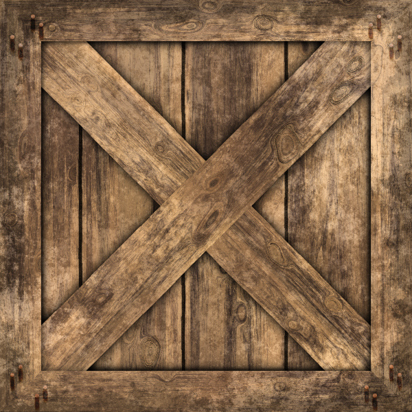
Next, we need to specify how this texture is applied to the model. We can define this mapping on a per-triangle basis, by specifying which points of the texture should go on each vertex of the triangle (Figure 14-2).
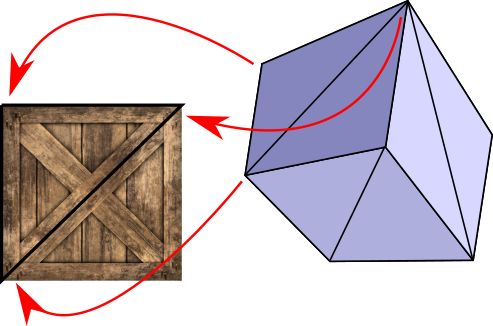
To define this mapping, we need a coordinate system to refer to points in the texture. Remember, a texture is just an image, represented as a rectangular array of pixels. We could use \(x\) and \(y\) coordinates and talk about pixels in the texture, but we’re already using these names for the canvas. Therefore, we use \(u\) and \(v\) for the texture coordinates and we call the texture’s pixels texels (a contraction of texture elements).
We’ll fix the origin of this \((u, v)\) coordinate system at the top-left corner of the texture. We’ll also declare that \(u\) and \(v\) are real numbers in the range \([0, 1]\), regardless of the actual texel dimensions of the texture. This is very convenient for several reasons. For example, we may want to use a lower- or higher-resolution texture depending on how much RAM we have available; because we’re not tied to the actual pixel dimensions, we can change resolutions without having to modify the model itself. We can multiply \(u\) and \(v\) by the texture width and height respectively to get the actual texel indices \(tx\) and \(ty\).
The basic idea of texture mapping is simple: we compute the \((u, v)\) coordinates for each pixel of the triangle, fetch the appropriate texel from the texture, and paint the pixel with that color. But the model only specifies \(u\) and \(v\) coordinates for the three vertices of the triangle, and we need them for each pixel . . .
By now you can probably see where this is going. Yes, it’s our good friend linear interpolation. We can use attribute mapping to interpolate the values of \(u\) and \(v\) across the face of the triangle, giving us \((u, v)\) at each pixel. From this we can compute \((tx, ty)\), fetch the texel, apply shading, and paint the pixel with the resulting color. You can see the result of doing this in Figure 14-3.
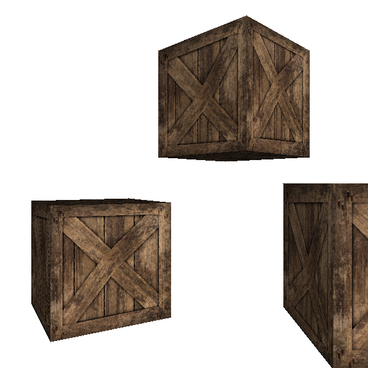
The results are a little underwhelming. The exterior shape of the crates looks fine, but if you pay close attention to the diagonal planks, you’ll notice they look deformed, as if bent in weird ways. What went wrong?
Perspective-Correct Texture Mapping
As in Chapter 12 (Hidden Surface Removal), we made an implicit assumption that turns out not to be true: namely, that \(u\) and \(v\) vary linearly across the screen. This is clearly not the case. Consider the wall of a very long corridor painted with alternating vertical black and white stripes. As the wall recedes into the distance, the vertical stripes should look thinner and thinner. If we make the \(u\) coordinate vary linearly with \(x'\), we get incorrect results, as illustrated in Figure 14-4.
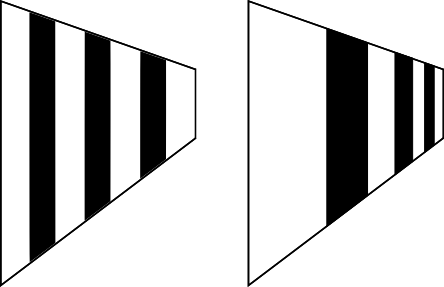
The situation is very similar to the one we encountered in Chapter 12 (Hidden Surface Removal), and the solution is also very similar: although \(u\) and \(v\) aren’t linear in screen coordinates, \(u \over z\) and \(v \over z\) are. (The proof is very similar to the \({1 \over z}\) proof: consider that \(u\) varies linearly in 3D space, and substitute \(x\) and \(y\) with their screen-space expressions.) Since we already have interpolated values of \(1 \over z\) at each pixel, it’s enough to interpolate \(u \over z\) and \(v \over z\) and get \(u\) and \(v\) back:
\[u = { {u \over z} \over {1 \over z}}\]
\[v = { {v \over z} \over {1 \over z}}\]
This produces the result we expect, as you can see in Figure 14-5.
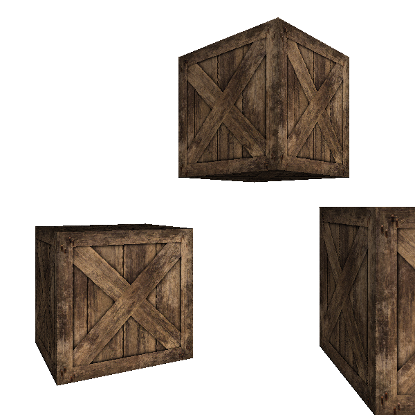
Figure 14-6 shows the two results side by side, to make it easier to appreciate the difference.
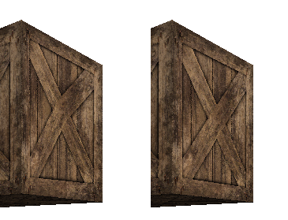
These examples look nice because the size of the texture and the size of the triangles we’re applying it to, measured in pixels, is roughly similar. But what happens if the triangle is several times bigger or smaller than the texture? We’ll explore those situations next.
Bilinear Filtering
Suppose we place the camera very close to one of the cubes. We’ll see something like Figure 14-7.
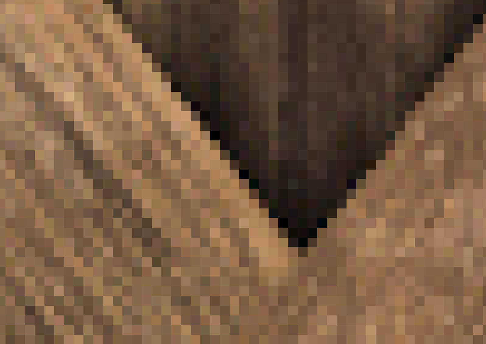
The image looks very blocky. Why does this happen? The triangle on the screen has more pixels than the texture has texels, so each texel is mapped to many consecutive pixels.
We are interpolating texture coordinates \(u\) and \(v\), which are real values between \(0.0\) and \(1.0\). Later, given the texture dimensions \(w\) and \(h\), we map the \(u\) and \(v\) coordinates to \(tx\) and \(ty\) texel coordinates by multiplying them by \(w\) and \(h\) respectively. But because a texture is an array of pixels with integer indices, we round \(tx\) and \(ty\) down to the nearest integer. For this reason, this basic technique is called nearest neighbor filtering.
Even if \((u, v)\) varies smoothly across the face of the triangle, the resulting texel coordinates “jump” from one whole pixel to the next, causing the blocky appearance we can see in Figure 14-7.
We can do better. Instead of rounding \(tx\) and \(ty\) down, we can interpret a fractional texel coordinate \((tx, ty)\) as describing a position between four integer texel coordinates (obtained by the combinations of rounding \(tx\) and \(ty\) up and down). We can take the four colors of the surrounding integer texels, and compute a linearly interpolated color for the fractional texel. This will produce a noticeably smoother result (Figure 14-8).
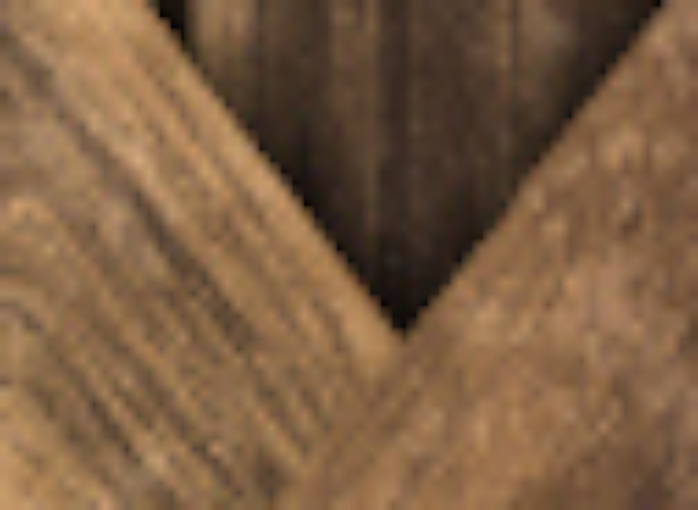
Let’s call the four surrounding pixels \(TL\), \(TR\), \(BL\), and \(BR\) (for top-left, top-right, bottom-left, and bottom-right, respectively). Let’s take the fractional parts of \(tx\) and \(ty\) and call them \(fx\) and \(fy\). Figure 14-9 shows \(C\), the exact position described by \((tx, ty)\), surrounded by the texels at integer coordinates, and its distance to them.
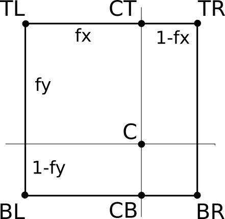
First, we linearly interpolate the color at \(CT\), which is between \(TL\) and \(TR\):
\[CT = (1 - fx) \cdot TL + fx \cdot TR\]
Note that the weight for \(TR\) is \(fx\), not \((1 - fx)\). This is because as \(fx\) becomes closer to 1.0, we want \(CT\) to become closer to \(TR\). Indeed, if \(fx = 0.0\), then \(CT = TL\), and if \(fx = 1.0\), then \(CT = TR\).
We can compute \(CB\), between \(BL\) and \(BR\), in a similar way:
\[CB = (1 - fx) \cdot BL + fx \cdot BR\]
Finally, we compute \(C\), linearly interpolating between \(CT\) and \(CB\):
\[C = (1 - fy) \cdot CT + fy \cdot CB\]
In pseudocode, we can write a function to get the interpolated color corresponding to a fractional texel:
GetTexel(texture, tx, ty) {
fx = frac(tx)
fy = frac(ty)
tx = floor(tx)
ty = floor(ty)
TL = texture[tx][ty]
TR = texture[tx+1][ty]
BL = texture[tx][ty+1]
BR = texture[tx+1][ty+1]
CT = fx * TR + (1 - fx) * TL
CB = fx * BR + (1 - fx) * BL
return fy * CB + (1 - fy) * CT
}
This function uses floor(), which rounds a number down to the nearest integer, and frac(), which returns the fractional part of a number, and can be defined as x - floor(x).
This technique is called bilinear filtering (because we’re doing linear interpolation twice, once in each dimension).
Mipmapping
Let’s consider the opposite situation, rendering an object from far away. In this case, the texture has many more texels than the triangle has pixels. It might be less evident why this is a problem, so we’ll use a carefully chosen situation to illustrate.
Consider a square texture in which half the pixels are black and half the pixels are white, laid out in a checkerboard pattern (Figure 14-10).
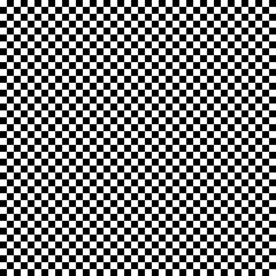
Suppose we map this texture onto a square in the viewport such that when it’s drawn on the canvas, the width of the square in pixels is exactly half the width of the texture in texels. This means that only one-quarter of the texels will actually be used.
We’d intuitively expect the square to look gray. However, given the way we’re doing texture mapping, we might be unlucky and get all the white pixels, or all the black pixels. It’s true that we might be lucky and get a 50/50 combination of black and white pixels, but the 50-percent gray we expect is not guaranteed. Take a look at Figure 14-11, which shows the unlucky case.
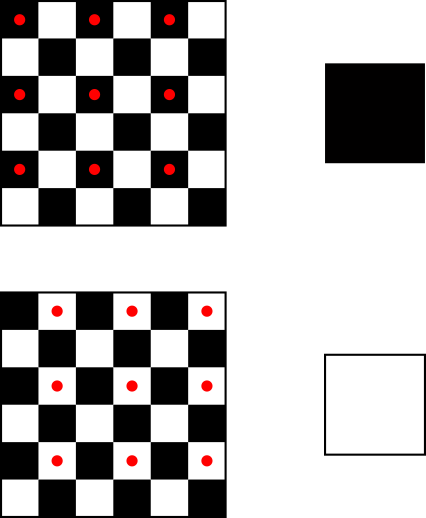
How to fix this? Each pixel of the square represents, in some sense, a \(2\times2\) texel area of the texture, so we could compute the average color of that area and use that color for the pixel. Averaging black and white pixels would give us the gray we are looking for.
However, this can get very computationally expensive very fast. Suppose the square is even farther away, so that it’s one-tenth of the texture width. This means every pixel in the square represents a \(10\times10\) texel area of the texture. We’d have to compute the average of 100 texels for every pixel we want to render!
Fortunately, this is one of those situations where we can replace a lot of computation with a bit of extra memory. Let’s go back to the initial situation, where the square was half the width of the texture. Instead of computing the average of the four texels we want to render for every pixel again and again, we could precompute a texture of half the original size, where every texel in the half-size texture is the average of the corresponding four texels in the original texture. Later, when the time comes to render a pixel, we can just look up the texel in this smaller texture, or even apply bilinear filtering as described in the previous section.
This way, we get the better rendering quality of averaging four pixels, but at the computational cost of a single texture lookup. This does require a bit of preprocessing time (when loading a texture, for example) and a bit more memory (to store the full-size and half-size textures), but in general it’s a worthwhile trade-off.
What about the \(10\times\) size scenario we discussed above? We can take this technique further and also precompute one-quarter-, one-eighth-, and one-sixteenth-size versions of the original texture (down to a \(1\times1\) texture if we wanted to). Then, when rendering a triangle, we’d use the texture whose scale best matches its size and get all the benefits of averaging hundreds, if not thousands, of pixels at no extra runtime cost.
This powerful technique is called mipmapping. The name is derived from the Latin expression multum in parvo, which means “much in little.”
Computing all these smaller-scale textures does come at a memory cost, but it’s surprisingly smaller than you might think.
Say the original area of the texture, in texels, is \(A\), and its width is \(w\). The width of the half-width texture is \(w \over 2\), but it requires only \(A \over 4\) texels; the quarter-width texture requires \(A \over 16\) texels; and so on. Figure 14-12 shows the original texture and the first three reduced versions.
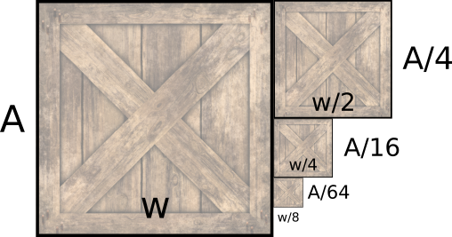
We can express the sum of the texture sizes as an infinite series:
\[A + \frac{A}{4} + \frac{A}{16} + \frac{A}{64} + .\, .\, . = \sum_{n=0}^\infty \frac{A}{4^n}\]
This series converges to \(A \cdot\) 4/3, or \(A \cdot 1.3333\), meaning that all the smaller textures down to \(1\times1\) texel only take one-third more space than the original texture.
Trilinear Filtering
Let’s take this one step further. Imagine an object far away from the camera. We render it using the mipmap level most appropriate for its size.
Now imagine the camera moves toward the object. At some point, the choice of the most appropriate mipmap level will change from one frame to the next, and this will cause a subtle but noticeable difference.
When choosing a mipmap level, we choose the one that most closely matches the relative size of the texture and the square. For example, for the square that was 10 times smaller than the texture, we might choose the mipmap level that is 8 times smaller than the original texture, and apply bilinear filtering on it. However, we could also consider the two mipmap levels that most closely match the relative size (in this case, the ones 8 and 16 times smaller) and linearly interpolate between them, depending on the “distance” between the mipmap size ratio and the actual size ratio.
Because the colors that come from each mipmap level are bilinearly interpolated and we apply another linear interpolation on top, this technique is called trilinear filtering.
Summary
In this chapter, we have given our rasterizer a massive jump in quality. Before this chapter, each triangle could have a single color; now we can draw arbitrarily complex images on them.
We have also discussed how to make sure the textured triangles look good, regardless of the relative size of the triangle and the texture. We presented bilinear filtering, mipmapping, and trilinear filtering as solutions to the most common causes of low-quality textures.